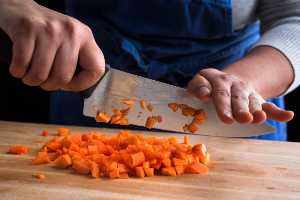
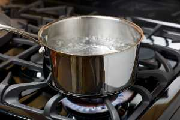
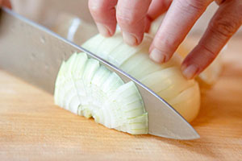
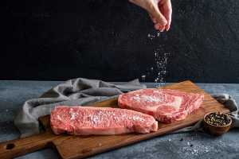
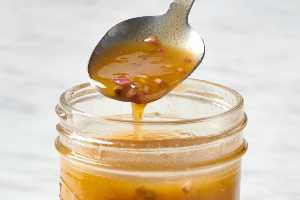
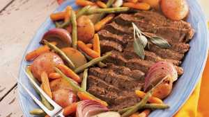
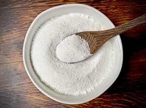
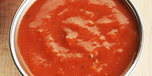

knife skills

Boiling water

cutting an onion the right way

salting

basic vinaigrette

roast meat and vegetables

creating salts

making simple sauce
how can the basic skills help me cook better
basic skills needed
Knife skills
Master the Art of Boiling
cutting an onion the right way
salt your cooking as you go
make a basic vinaigrette
being able to roast meat and vegetables
create a proper salt
deglaze a pan to make a simple sauce
can these skills help me more effcient?
it can help people meet nutrition guide lines in their daliy nutrition supply
it can also boost self esteem and confidence
easy foods to make for basic starters
what are some foods that i can make easly?
sandwitch, cup ramen, rice, eggs, macaroni and cheese
how can i add on to these foods to make them better
you can add other things like adding more meat and cheese to a sandwitch or you can try making them a diffrent way like using a pan